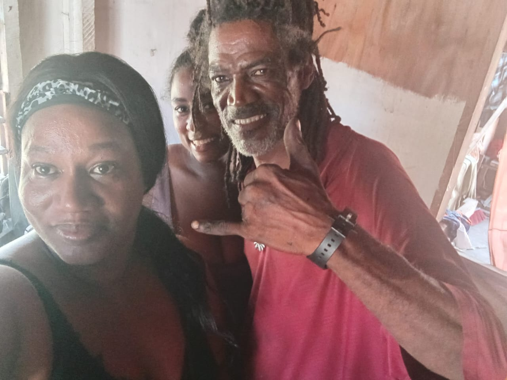
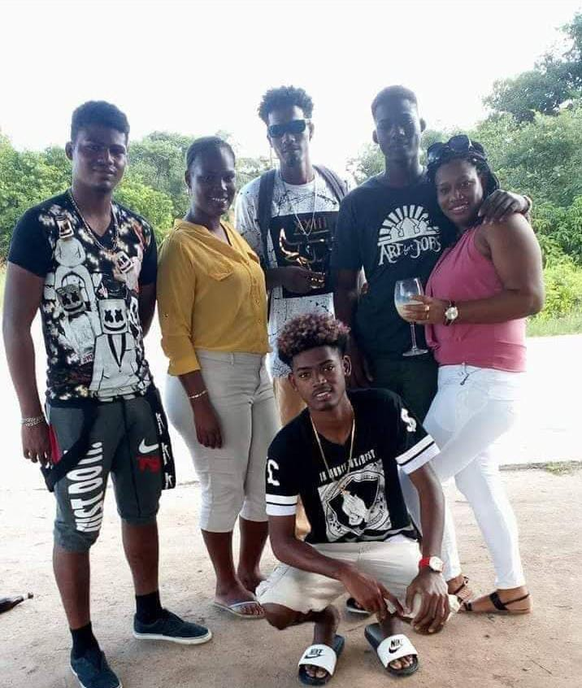
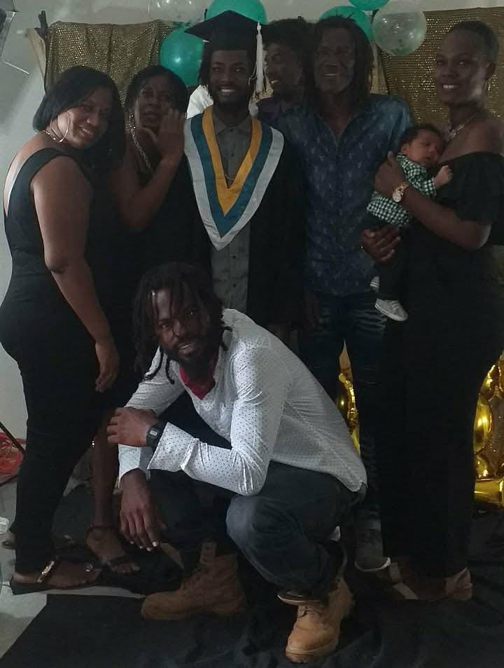
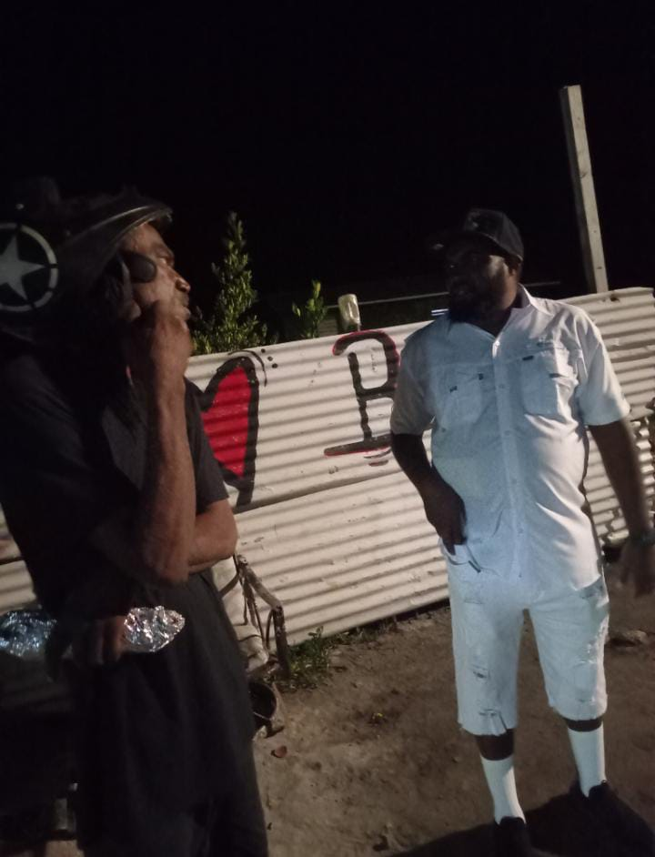

A Memorial in Loving Memory of Mr. Harrison Wright
← Back to Home
Remembering a life that touched the hearts of many.
Today, we gather to remember and honor Mr. Harrison Wright, better known to many of us as “Dirty Harry.” It is difficult to find the words to capture a life as fully and as generously as he lived.
He touched so many of us in ways we probably never fully realize. But his legacy is clear: through his kindness, his wisdom, and the love he gave so freely, it will live on in every single one of us.
Mr. Harrison was born to Louanna Gillett on September 8, 1968. He attended Grace Primary School and later went on to Sec Two. In his early years, he worked as a bartender at Caye Chapel. That was only the beginning of a life shaped by hard work, steady character, and devotion to the people around him.
He then met the love of his life, Abby Williams, and they were married on November 6, 1996. Together, they built a life grounded in dedication and, most of all, family.
Later, after leaving Caye Chapel, they went on to live in San Pedro, where he and Abby began their family.
A father, grandfather, husband, brother, and friend.
Carshena was the first child, and from there, his home filled with love and joy. Mr. Harrison found great joy in his seven children, and he was blessed with ten grandchildren, whom he cherished deeply.
Above all the things Harrison worked on and accomplished, his family remained one of the most important parts of his life. Being a father to seven children gave him seven different relationships, seven different personalities to understand, and countless memories that will remain with his family forever.
Harrison took great joy in being a grandfather. His ten grandchildren gave him another generation to love, guide, and create memories with. The stories they carry about their grandfather will help keep his memory alive as they grow older.
A mechanic with a gift for solving problems.
Mr. Harrison spent much of his life as a mechanic, a man who took pride in fixing things and making them work again. He worked on golf carts, boats, motorcycles, and anything he could repair.
Whether it was engines, problems, or someone in need, Mr. Harrison had a way of turning struggle into progress. He didn't just fix machines — he fixed situations and he helped people.
Harrison had a natural ability to work with his hands and figure things out. When something stopped working, he was often the person people turned to. He had a way of looking at a problem, figuring it out, and finding a way forward.
But what made him special was that he didn't only fix machines. He helped people. If someone was having a problem and needed a hand, he was willing to help in whatever way he could.
Family and friendships that meant so much to him.
Mr. Harrison always spoke highly about his brother, Allison McField, whom he loved dearly. Even though they didn't see each other often, whenever they did, they made much of each other. Their bond remained an important part of Harrison's life.
He also valued his friends Mr. Lucio, whom he referred to as his dad, and Russan. These relationships were part of the life Harrison built and the people who helped make his journey meaningful.
The memories that make a person unforgettable.
Sometimes, it is not the big moments that we remember most. It is the little things that become the memories we hold onto.
We will remember Harrison's love for his family, his ten grandchildren, his dog Oreo, his tablet, and the everyday moments that made him who he was.
These simple things may seem small, but they are the things that make a person unforgettable. They are the memories that family and friends will carry with them long after today.
A name that became part of his story.
To many people, he was Harrison Wright. But to many others, he was simply “Dirty Harry.” That name became part of the person people knew and remembered.
When we hear the name “Dirty Harry,” we will remember the man behind it — the father, grandfather, brother, friend, husband, and mechanic who left his own mark on the people around him.
His name will always be connected to the memories shared with him and the people whose lives he touched.
Another part of Harrison's unique family story.
Mr. Harrison was also known for a complicated story of names and identity, something many of us didn't fully understand at first.
Some of you may remember how his last name situation was spoken about over the years. Until September 2, my sister Cashema and I realized that only my younger brother and I were registered with his last name, which was Wright.
In 2011, he did a deed poll and changed his last name from Gillett to Wright. Yet, my other siblings still remain as McField, a name that came from a man my grandmother married, but later divorced.
So we are still trying to figure out why we were given McField if he was never registered as McField. Cashema and I laughed about them not being his children. Even so, Mr. Harrison remained the same man to all of us — steady, loving, and present.
Special moments and memories of Mr. Harrison Wright.



The things he leaves behind in all of us.
Today, we honor Mr. Harrison not only for what he did, but for how he did it — with patience, perseverance, and love.
His kindness and wisdom weren't limited to special occasions. They were lived out in everyday moments: in the way he worked, the way he cared, and the way he kept showing up for the people he loved.
So even though we are saying goodbye, we are not truly losing him. Because the truth is: his life has left a mark. It lives in our stories. It lives in how we think about family. And it lives in the values he showed us — hard work, loyalty, and generosity of spirit.
“Those we love never truly leave us. Their memories remain forever in our hearts.”